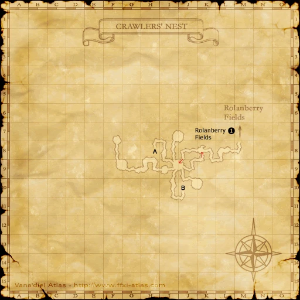
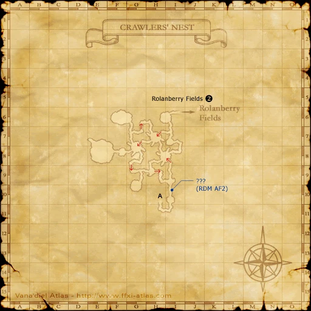
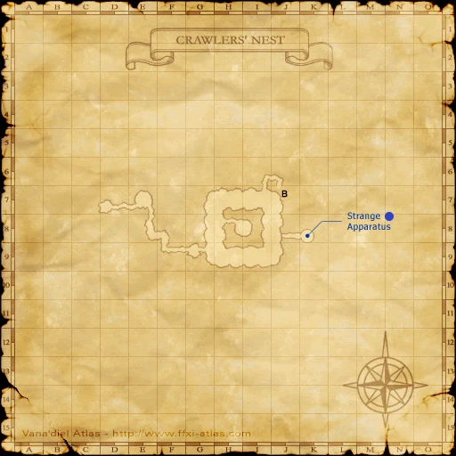

Description
Crawlers' Nest is a dungeon in Derfland.
Map

Involved in Quests / Missions
| Quest / Mission | Type | Starter | Location |
|---|---|---|---|
| A Boy's Dream | PLD AF | Ailbeche | Northern San d'Oria (pos=J-9) |
| Borghertz's Chasing Hands | RNG AF | Guslam | Upper Jeuno (pos=H-8) |
| Borghertz's Harmonious Hands | BRD AF | Guslam | Upper Jeuno (pos=H-8) |
| Borghertz's Healing Hands | WHM AF | Guslam | Upper Jeuno (pos=H-8) |
| Borghertz's Striking Hands | MNK AF | Guslam | Upper Jeuno (pos=H-8) |
| Borghertz's Warring Hands | WAR AF | Guslam | Upper Jeuno (pos=H-8) |
| Borghertz's Wild Hands | BST AF | Guslam | Upper Jeuno (pos=H-8) |
| Cargo | General | Vuntar | Selbina (pos=H-9) |
| Enveloped in Darkness | RDM AF | Curilla | Chateau d'Oraguille (pos=I-9) |
| Escort for Hire (Bastok) | Escort | Trilok | Port Bastok (pos=D-6) |
| Her Majesty's Garden | General | Chalvatot | Chateau d'Oraguille (pos=F-7) |
| Hoist the Jelly, Roger | General | Maysoon | Windurst Waters (pos=E-9) |
| In Defiant Challenge | Genkai | Maat | Ru'Lude Gardens (pos=H-5) |
| Recollections | BLM AF | Chumimi | Heavens Tower |
| Strange Apparatus | --- | --- | --- |
| The Usual | General | Hilda | Port Bastok (pos=E-6) |
NPCs
| Name | Location | Type |
|---|---|---|
| Olavia | — | Escort NPC |
Notorious Monsters
| Name | Level | Drops | Steal | Family | Spawns | Notes |
|---|---|---|---|---|---|---|
| Awd Goggie | 68 | Crawler Egg Royal Jelly Silk Thread | Silk Thread |  CrawlersImage source CrawlersImage source | — | A, L, H, Sc |
| Demonic Tiphia | 60 | Royal Jelly Tiphia Sting | — |  BeesImage source BeesImage source | — | A, S, L |
| Drone Crawler | 50 & 55 | Crawler Egg Rolanberry 874 Silk Thread | — | CrawlersImage source | — | A, L, H, Sc |
| Guardian Crawler | 45 & 50 | Crawler Egg Rolanberry 881 Silk Thread | — | CrawlersImage source | — | A, L, H, Sc |
| Matron Crawler | 64 | Crawler Egg Rolanberry 864 Silk Thread | — | CrawlersImage source | — | A, L, H, Sc |
| Queen Crawler | 64 | Rolanberry 864 | — | CrawlersImage source | — | A, L, H, Sc |
Regular Monsters


Event Monsters
| Name | Level | Drops | Steal | Family | Spawns | Notes |
|---|---|---|---|---|---|---|
| Dreadbug | 52 | Crawler Egg Giant Shell Bug Silk Thread | — | CrawlersImage source | 1 | Spawned Quest: A Boy's Dream; A, L, H |
 MimicImage source MimicImage source | — | Nest Coffer Key | — | Mimics | 1 | Failed coffer pick; A |
Maps


EXP camps
Arrival and hazards
Entrance book. Use the first crawler and bee rooms; do not head into deeper high-level sections.
Story walkthroughs in this area
| Story | Mission / quest |
|---|---|
| ACP 3 | Gatherer of Light (I) |
References
External references describe their own server or retail rules. Documented Zenith changes take precedence.
Map credits: Map 1 — HorizonXI Wiki · Map 2 — HorizonXI Wiki · Map 3 — HorizonXI Wiki. Original game maps © SQUARE ENIX; redrawn maps retain the credited authorship and license.


Additional level-75 reference
|
This web-filled cave plays home to the pests that plague the Rolanberry Fields: the crawlers. While the extermination of these insects by adventurers is approved and rewarded, not once has the Jeunoan military led a full-force attack on the nest. Theories suggest that the lack of support from Jeuno is due to the economic benefits the duchy receives from the sale of silk, a valuable commodity that often accompanies the yellow and black pests. |
Connecting Areas
Involved in Quests/Missions
|
Quest |
Type |
Starter |
Location |
| A Boy's Dream | AF (PLD) | Ailbeche | Northern San d'Oria (J-8) |
| Borghertz's Striking Hands | AF (MNK) | Guslam | Upper Jeuno (H-8) |
| Borghertz's Wild Hands | AF (BST) | Guslam | Upper Jeuno (H-8) |
| Cargo | General | Vuntar | Selbina (H-9) |
| Cook's Pride | General | Naruru | Lower Jeuno (H-10) |
| Enveloped in Darkness | AF (RDM) | Curilla | Chateau d'Oraguille (I-9) |
| Escort for Hire (Bastok) | Escort | Trilok | Port Bastok (D-6) |
| Her Majesty's Garden | General | Chalvatot | Chateau d'Oraguille (F-7) |
| Hoist the Jelly, Roger | General | Maysoon | Windurst Waters (E-9) |
| In Defiant Challenge | Genkai | Maat | Ru'Lude Gardens (H-5) |
| Recollections | AF (BLM) | Chumimi | Heavens Tower |
| Strange Apparatus | -- | -- | -- |
| The Usual | General | Hilda | Port Bastok (E-6) |
Coffer/Chest Contents
|
NPCs Found Here
Weather
| ||||||||||||||||||||
Notorious Monsters Found Here
- Awd Goggie | Demonic Tiphia | Dreadbug | Drone Crawler |
- Guardian Crawler | Matron Crawler | Queen Crawler
|
Name |
Level |
Drops |
Steal |
Family |
Spawns |
Notes | |||||||
|
68 |
1 |
A, L, H, Sc | ||||||||||
| 60 |
1 |
A, L | |||||||||||
|
52 |
A, L, H | |||||||||||
|
50 & 55 |
2 |
A, L, H, Sc | ||||||||||
|
45 & 50 |
2 |
A, L, H, Sc | ||||||||||
|
64 |
1 |
A, L, H, Sc | ||||||||||
|
64 |
|
1 |
A, L, H, Sc | |||||||||
|
HP = Detects Low HP; M = Detects Magic; Sc = Follows by Scent; T(S) = True-sight; T(H) = True-hearing JA = Detects job abilities; WS = Detects weaponskills; Z(D) = Asleep in Daytime; Z(N) = Asleep at Nighttime | |||||||||||||
Mobs Found Here
|
Name |
Level |
Drops |
Steal |
Family |
Spawns |
Notes | |||||||
|
40-42 |
12 |
L, S, Sc | |||||||||||
|
42-44 |
10 |
L, H | |||||||||||
|
45-47 |
6 |
A, L, H, Sc | |||||||||||
|
52-54 |
12 |
A, L, S, Sc | |||||||||||
|
45-47 |
6 |
L, H | |||||||||||
|
55-58 |
6 |
A, L, H | |||||||||||
|
52-54 |
11 |
M | ||||||||||
|
52-54 |
12 |
M | ||||||||||
|
51-54 |
21 |
A, L, H | |||||||||||
|
59-62 |
7 |
A, L, S, Sc | |||||||||||
|
50-53 |
24 |
L, H | |||||||||||
|
60-62 |
5 |
A, L, H, Sc | |||||||||||
|
60-63 |
11 |
A, L, H, Sc | |||||||||||
|
49-51 |
12 |
A, L, H | |||||||||||
|
41-43 |
6 |
L, H | |||||||||||
|
?? |
Spawned when |
A | ||||||||||
|
53-55 |
6 |
A, L, H, Sc | |||||||||||
|
45-47 |
7 |
L, S, Sc | |||||||||||
|
45 |
2 |
A, S, M | |||||||||||
|
53-55 |
11 |
A, L, H | |||||||||||
|
47-49 |
22 |
A, L, H, Sc | |||||||||||
|
48-50 |
8 |
A, L, S | |||||||||||
|
55-57 |
7 |
A, L, S | |||||||||||
|
50-52 |
12 |
L, H | |||||||||||
|
40-44 |
28 |
L, H | |||||||||||
|
HP = Detects Low HP; M = Detects Magic; Sc = Follows by Scent; T(S) = True-sight; T(H) = True-hearing JA = Detects job abilities; WS = Detects weaponskills; Z(D) = Asleep in Daytime; Z(N) = Asleep at Nighttime |
|||||||||||||
Adapted from Eden Wiki: Crawlers' Nest · Contributors and history · CC BY-SA 4.0. Revision 3444. Layout, links and optional background text adapted for Zenith.